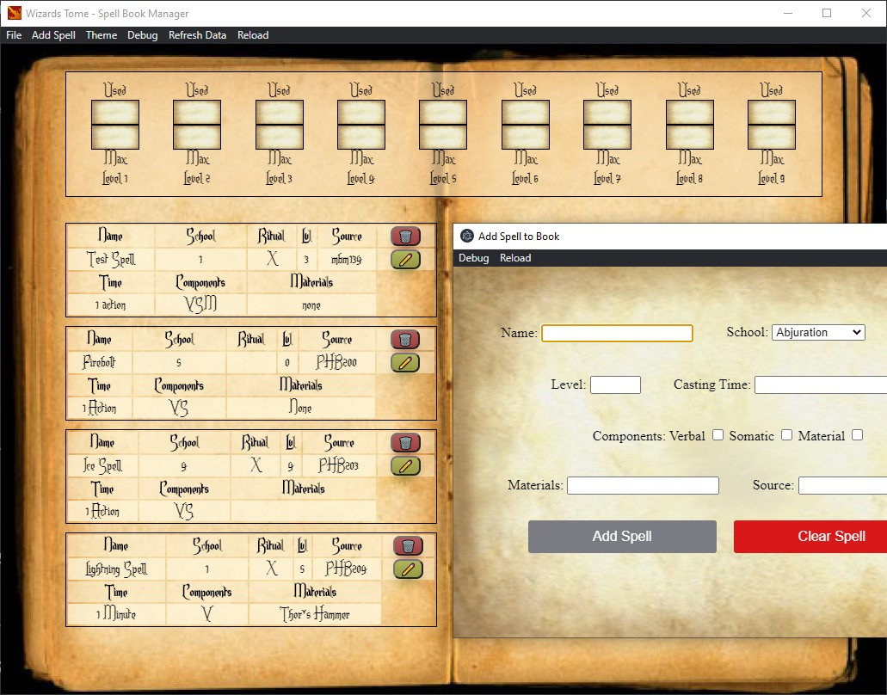
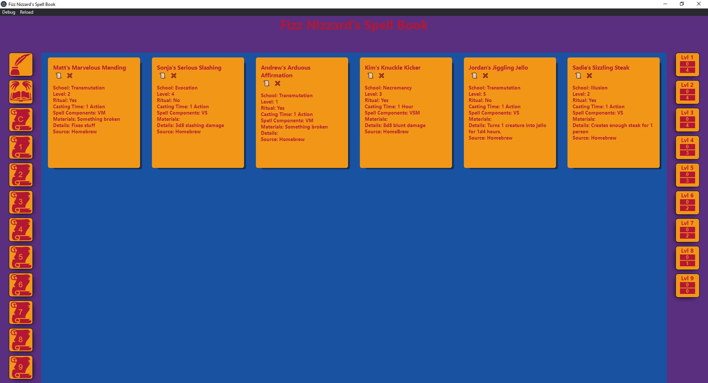

Hello, world! I'm Matt
Where I Am
I am a programmer. I like to solve problems and make cool things. I am in the process of completing my second year of the Web Programming diploma at NSCC. Through this course, I have gained many technical skills that will aid me in my future career, and I look forward to learning more in the months ahead. This year has been especially difficult as I have not been able to interact with my peers and I thrive on feedback.
Where I'm Going
My career goals are firmly planted in a corporate setting. I would like to begin at a company at an entry level, to meet and learn from fellow programmers. Through this, I would gain valuable experience from developers, about topics that I may not have much experience with. For example, my knowledge of launching a finished product is relatively limited, as I've never experienced one. Eventually, I would like to work on software that other developers rely on. Software such as internal tooling, public frameworks, or completely new technologies available privately or publicly.
How I'm Getting There
IBM has a reoccurring job post targeting recent graduates. While looking at the job post, two technical skills pop out at me HTML5, CSS and Javascript. These are skills that are actively being refined by attending the Web Programming at NSCC. I've been able to integrate these skills into all my courses by using web sites in place of documents when I can. This extra practice allows me to become more comfortable and accurate when dealing with web technologies.One non-technical skill pops out as well, Demonstrated Leadership Abilities. I refine these skills by practicing them as the team leader of the Recruitment Team for the IT Job Fair 2021. I am responsible for organizing a group of eight other students, and ensuring that tasks are being completed. Just recently we completed sending initial invites to companies, a full month before they were sent last year. This will ensure potential attendees have the most up-to-date information about the job fair. Credit where credit is due, I have an amazing team on the Recruitment Team this year.
Work Sample - Flags App

 Github
GithubThis was my final project from the Intro to Programming course last year. I used HTML, CSS3 and Javascript to create an app that allows a user to select a country and view an image of that countries flag. In addition, information about the country, which was stored in a JSON file was also displayed to the user. This was my first attempt at unifying these three technologies into a single app. Before, I had only integrated HTML/CSS, and Javascript/HTML. Looking back, I can tell by my design, the simplicity of the design and the plain colors, that my CSS skills were still developing. I can also tell, looking at my code, that I had just begun to explore the features of ES6, such as arrow functions and asynchronous functions. These would prove to be the basis for modern web frameworks like React.
Work Sample - Wizard's Tome (Electron)
This was the final version of an assignment from the Special Topics course, where we covered Electron. Electron is a version of the Chromium engine that is used to power web apps natively on various devices. It integrates the Node.Js environment which also runs on the Chromium engine. I used an Electron Starter NPM package to bootstrap Electron, so i could begin development right away. The app, which is supposed to imitate a wizard's spell book, allows users to add, view, update, and delete (CRUD) spells from a virtual spell book. These changes are persisted using a Node implementation of SQLite, a relational database engine, and a file located on the user’s device. This was my first experience with creating an app combining server-side and frontend technology, so it was a bit of a learning curve. In particular, it was difficult at first to understand how Electron communicated with the rendered page, which I came to learn was called the render process.
My design this time around was far more intricate, incorporating background images, custom fonts, and a distinct color scheme. Upon reflection, the design I chose for this program was a bit of a "novelty" design. For example, the page does not React to the window resizing because the image of the book does not scale. To mitigate this, I disabled the ability for the user to resize the window, but it is not what would be considered a modern web app.
Work Sample - Fizz Nizzard's Spell Book (Electron/React)
This was my final project for the Special Topics course where we covered Electron. For this app, I decided to recreate the functionality of the Wizard's tome app, but with a modern interface. This interface uses CSS Grid and Flex-Box to create a responsive interface that resizes its contents depending on the window size. In addition, I opted to use the React framework to control the frontend of the app. This allowed me to use React's component-based nature to build the app, and "react-router" to handle switching components dynamically.
Unlike the Wizard's Tome, I did not use the Electron Starter package from NPM. Instead, I used the "create-react-app" starter package, and integrated Electron into it. I encountered an issue where, if Electron started before the React server, React would throw an error about missing data. To solve this problem, I discovered that I would need to control when Electron started. I was able to solve the problem by using a NPM package called "foreman", which allows you to use a "procfile" to run Node commands, and a custom Node script, which waited for a connection to the React server before starting Electron. While I did eventually solve the problem, it was a difficult experience for me, as I had little experience dealing with the complexity of Node. However, Because of this challenge, I was able to learn more about how React and Electron work.
Conclusion
One thing I did not mention is that Fizz Nizzard's Spell Book was created almost exactly one year after Map Quiz. I think that these three examples of my work clearly show the progress I have made over the past year. The progress I made is impressive to look back at, and I am amazed I learned so much in such a short amount of time. I believe this is because of how much I enjoy creating for the web. It is easy to get started developing for the web (all you need is a text editor!), however the tools that are available allow for very powerful tools for developers. I have been a hobby programmer for several years, but since I have begun my exploration of web technologies, I have been passionate about creating things for the web, and I think my portfolio shows it. If you have not yet visited the linked Github repositories, I would like to recommend visiting them now, as they contain more information about each project.